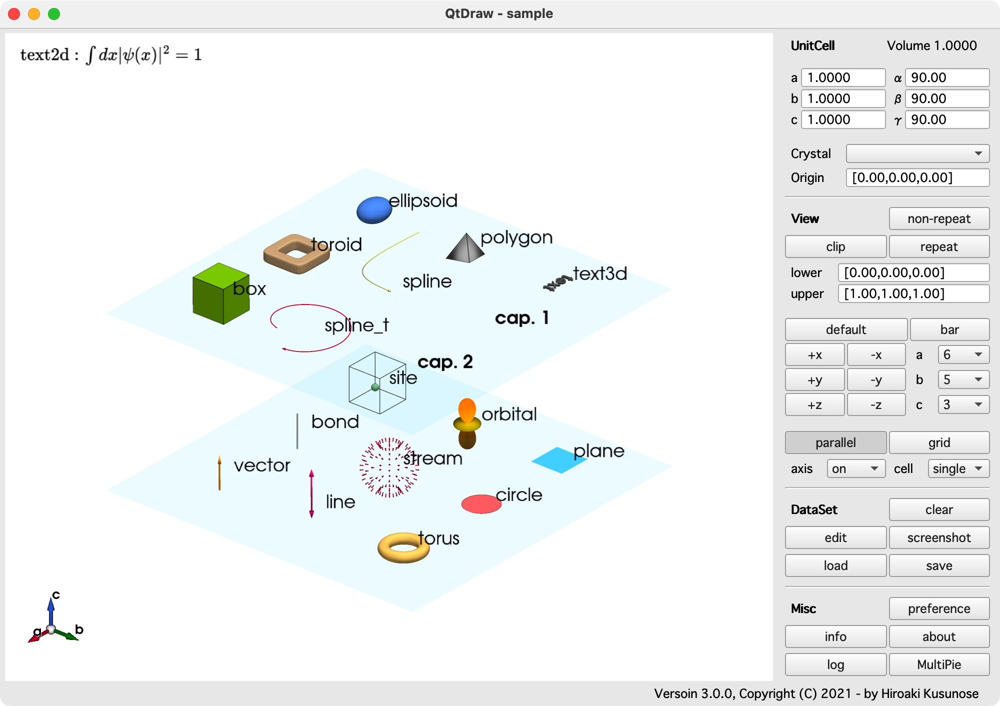
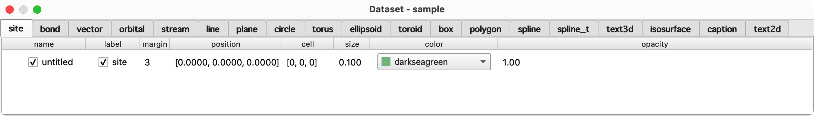

Getting Started#
Main window#
The main window of QtDraw is the following, which has the main and control panels.

Create Object#
To draw these objects, push e key or edit button in the right panel, and then the Dataset window appears as follows.

In the Dataset window, you can choose the object in the tab, and in each tab, you can create or copy an object in the context menu by right-clicking. The easiest way to create an object, you first create an object with the default value, and then you can edit it freely.
Preference#
Look and feel of QtDraw can be modified by using preference panel as follows.
{kind=link}
Create Object from Python Code#
All the objects can also be drawn from Python code or Jupyter Notebook. The example of Jupyter Notebook is given in qtdraw.ipynb. See API in detail. Using this functionality, the background job can be performed. See the example in
#
# background.py
#
import numpy as np
from qtdraw.util.qt_event_util import get_qt_application
from qtdraw.core.pyvista_widget import PyVistaWidget
filename = "output.qtdw" # output file name.
# create widget.
app = get_qt_application()
widget = PyVistaWidget(off_screen=True)
widget.set_cell("off") # cell off.
# add objects.
for i in range(32):
x = np.cos(i * np.pi / 8)
y = np.sin(i * np.pi / 8)
z = i * 0.05
widget.add_site(position=f"[{x},{y},{z}]", size=0.1)
# save and quit.
widget.save(filename)
app.quit()
The same thing is also simply done by
#
# background_s.py
#
import numpy as np
from qtdraw.core.pyvista_widget import create_qtdraw_file
# draw objects by using widget.
def draw(widget):
widget.set_cell("off") # cell off.
# add objects.
for i in range(32):
x = np.cos(i * np.pi / 8)
y = np.sin(i * np.pi / 8)
z = i * 0.05
widget.add_site(position=f"[{x},{y},{z}]", size=0.1)
# draw and write file.
create_qtdraw_file(filename="output.qtdw", callback=draw)